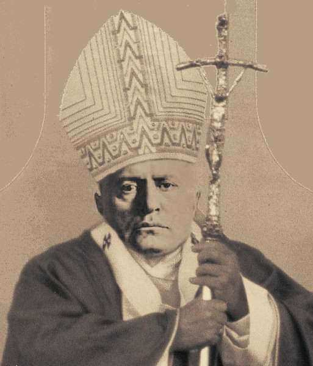

« [Les Juifs] …peuple dur et déloyal, comme l’attestent aussi ses descendants[…] nation réprouvée [qui] persévère dans la réprobation […] adonnée au culte de l’argent[…] fomentatrice de mensonges et d’injures [à l’égard du] catholicisme… » 1
À l’exception de la petite trentaine de pages consacrées par le P. Passelecq et B. Suchecky à l’antijudaïsme de la Civiltà Cattolica, revue des jésuites de Rome, dans leur ouvrage 2, il n’existe, à ma connaissance, aucune étude (en langue française) fiable et documentée, qui soit consacrée à la perception qu’avaient, des juifs et de la “question juive”, la hiérarchie catholique et le clergé durant la période de référence 3. En dehors des documents, au demeurant rarissimes, qui traitent expressément de ce thème, le chercheur est contraint d’éplucher les discours et homélies des papes et des prélats de l’époque, et de pratiquer des sondages dans les articles de presse d’alors. Mais ce labeur ingrat révèle un état de choses qui ne laisse pas de choquer. En la matière, qu’on fût pape, prélat, clerc ou simple fidèle, la représentation qu’on se faisait des juifs, la perception qu’on avait de leurs agissements et de leurs projets n’avaient souvent rien à envier aux pires divagations et affabulations médiévales. Les propos les plus violents émanent de Pie IX (1792-1878) 4. Dans une de ses contributions 5, le professeur Giovanni Miccoli en a évoqué quelques-uns, extraits des discours de ce pape, « adressés aux pèlerins venus à Rome pour exprimer leur fidélité au "vieillard prisonnier du Vatican" » 6:
Pie IX […] fait souvent allusion aux juifs avec des mots très durs: «chiens» devenus tels «pour leur incroyance» («et de ces chiens, ajoute le pape, il y en a beaucoup trop aujourd’hui à Rome, et on les entend aboyer dans les rues et ils nous dérangent partout où ils vont»); «bœufs» qui «ne connaissent pas Dieu» et «écrivent des blasphèmes et des obscénités dans les journaux»: mais viendra le jour – assure le pape – le jour terrible de la vengeance divine, où ils devront rendre compte des iniquités qu’ils ont commises»; «peuple dur et déloyal, comme l’attestent aussi ses descendants»; «nation réprouvée», et qui «persévère dans la réprobation, comme nous pouvons le voir de nos propres yeux… consacrée au culte de l’argent… fomentatrice de mensonges et d’injures au catholicisme»7.
Mentionnons également la sèche réponse du pape Pie X, sollicité par Théodore Herzl de soutenir le mouvement de retour des juifs à Sion 8:
Nous n’approuverons jamais le mouvement sioniste […] il n’est pas en notre pouvoir d’empêcher que les juifs aillent à Jérusalem, pourtant, s’ils y vont, nous ne pourrons jamais approuver le fait accompli. Les juifs n’ont pas reconnu Notre-Seigneur, et nous, par conséquent, ne pouvons reconnaître le peuple juif.
Dans une allocution au Consistoire en date du 13 juin 1921, le pape Benoît XV lui- même se laissa aller –chose rarissime dans des textes officiels de l’Eglise catholique– à des propos diffamatoires visant à discréditer les sionistes. Extrait:
Quand les troupes alliées eurent une fois de plus remis les Saints Lieux au pouvoir des chrétiens, Nous partageâmes de tout cœur l'allégresse générale des fidèles; mais cette joie était impuissante à dissiper la crainte, manifestée alors dans Notre allocution consistoriale, de voir un succès éclatant et heureux en soi aboutir à assurer désormais aux Israélites en Palestine la prépondérance et un statut privilégié. Cette crainte, les événements l'ont prouvé, n'était pas vaine. Il est en effet manifeste que, loin de s'améliorer, la situation des chrétiens en Terre Sainte est devenue plus difficile encore que jadis, à raison des nouvelles lois et institutions politiques qui – non par la volonté de leurs auteurs, mais en fait incontestablement – tendent, en faveur des Israélites, à enlever au christianisme la position qu'il y a toujours occupée jusqu'ici. C'est ce but que poursuivent bien des personnes par leurs efforts intenses en vue de dépouiller les Lieux Saints de leur caractère sacré et de les transformer en lieux de plaisir en y important les attractions de fêtes mondaines et tous les appâts de la sensualité, frivolités qui, déplorables partout ailleurs, sont encore plus déplacées dans une région parsemée des plus vénérables monuments religieux 9.
Pour donner une idée de la passion et de l’ignorance grossières qui caractérisaient l’entourage du pape et ses informateurs en cette matière, il n’est que de lire ce morceau d’anthologie, extrait d’une conférence que donna, en 1922, à Rome, le Patriarche latin de Jérusalem, Mgr Luigi Barlassina 10:
…Le but du sionisme, tel que le confessent les sionistes eux-mêmes, est le rétablissement du peuple d'Israël sur la terre de leurs ancêtres et l'expulsion des autres nationalités qui s'y sont établies au cours des siècles. Donc, le but du sionisme est la conquête de la Palestine. Pour y parvenir, les sionistes ne reculent devant aucun moyen. Protégés par les autorités britanniques –on sait, en fait, que Sir Herbert Samuel et presque tous les fonctionnaires anglais sont des sionistes militants -, les dirigeants sionistes sont en réalité les maîtres de la Palestine: ils dictent la loi et imposent leur volonté à toute la population, catholique, musulmane, et jusqu'aux israélites orthodoxes, soumis à mille abus de pouvoir de la part de leurs coreligionnaires. Outre l'autorité, ils disposent de beaucoup d'argent envoyé par les comités sionistes de tous les pays, spécialement de ceux des États-unis et de Grande- Bretagne, et avec cet argent, ils achètent les terres des pauvres musulmans ruinés par la guerre, ils fondent des écoles et quelquefois corrompent aussi les consciences. En bref, comme le prouvent des rapports fiables, le propos des sionistes est d'exproprier peu à peu les Arabes et les chrétiens et de prendre leur place. Pour accroître le nombre de leurs coreligionnaires, on a autorisé l'immigration en Palestine des Juifs russes, presque tous bolcheviques[…] en fait on ne refuse le droit à l'immigration qu'à ceux qui ne sont pas juifs. L'action sioniste ne s'est pas révélée moins funeste sur le plan de l'immoralité, qui, à partir du moment où les sionistes se sont érigés en maîtres de la Palestine, s'est terriblement étendue sur cette terre baignée par le sang de Jésus- Christ. Des établissements de vice se sont ouverts à Jérusalem, à Jaffa, à Nazareth, et dans tous les centres importants: les femmes de mauvaise vie fourmillent partout, les maladies honteuses se répandent, c'est vraiment "l'abomination de la désolation dans le Lieu saint" [cf. Mt 24, 15]…
Et le patriarche de conclure la conférence en lançant ce brûlant appel à tous les catholiques:
Il faut sauver la Palestine, menacée de tomber sous un joug mille fois pire que celui des Turcs; une fois encore doit retentir le cri des Croisés: "Dieu le veut, Dieu le veut!", une croisade pacifique mais forte, par la plume, par la parole, par l'action, par l'argent, pour libérer la patrie du Sauveur…
Pie XI lui-même, tant vanté pour son encyclique (Mit brennender Sorge) contre le racisme et l’idéologie nazie (1937), et sa fameuse phrase, prononcée en 1939, au cours d’une audience générale: « Spirituellement, nous sommes des Sémites! », Pie XI lui-même ne sut pas percevoir la grandeur du destin juif, ni la pérennité de sa vocation. Selon Passelecq et Suchecky, qui citent le seul passage de Mit brennender Sorge, évoquant les juifs de l’époque biblique 11:
Loin de condamner explicitement l’antisémitisme, ou même d’avoir une parole de compassion envers les juifs persécutés en Allemagne, près de deux ans après l’adoption des lois racistes de Nuremberg, ce passage rappelle, au contraire, l’infidélité du peuple choisi […]s’égarant sans cesse loin de son Dieu», et «qui devait crucifier» le Christ. De ce point de vue, force est de constater que Mit brennender Sorge est en retrait par rapport au décret du Saint-Office pour la dissolution de Amici Israel, 1928, et ce dans un contexte qui rendait une telle condamnation plus urgente qu’en 1928.
Enfin, il est heureux que l’Encyclique Humani Generis Unitas 12,contre l’antisémitisme, qu’envisageait le pontife, n’ait pas vu le jour, car les passages ci-après resteraient à la honte de l’Église 13:
(§ 136) «… aveuglés par des rêves de conquête temporelle et de succès matériel, les juifs perdirent ce qu’eux-mêmes avaient recherché. Quelques âmes d’élite font exception à cette règle générale: les disciples du Sauveur, les premiers chrétiens israélites et, au travers des âges, une infime minorité du peuple juif […] De plus, ce peuple infortuné, qui s’est jeté lui-même dans le malheur, dont les chefs aveuglés ont appelé sur leurs propres têtes les malédictions divines, condamné semble-t- il, à errer éternellement sur la terre, a cependant été préservé, par une mystérieuse Providence, de la ruine totale et s’est conservé à travers les siècles jusqu’à nos jours… (§ 142) «La haute dignité que l’Église a toujours reconnue à la mission historique du peuple juif, ses vœux ardents pour sa conversion, ne l’aveuglent pas cependant sur les dangers spirituels auxquels le contact avec les juifs peut exposer les âmes. Elle n’ignore pas qu’elle doit veiller à la sécurité morale de ses enfants. Et cette obligation n’est certes pas moins urgente aujourd’hui que par le passé. Tant que persiste l’incrédulité du peuple juif et que se maintient son hostilité contre le christianisme, l’Église doit, par tous ses efforts, prévenir les périls que cette incrédulité et cette hostilité pourraient créer pour la foi et les mœurs de ses fidèles[…] L’histoire nous apprend que l’Église n’a jamais failli à ce devoir de prémunir les fidèles contre les enseignements juifs, quand les doctrines comportées menacent la foi. Elle n’a jamais sous-estimé la vigueur incroyable des reproches que Saint Étienne, premier martyr, lançait à ces juifs obstinés qui, sciemment, résistaient à l’appel de la grâce: “Hommes à la tête dure…” (Ac 7, 51). Elle a pareillement mis en garde contre des relations trop faciles avec la communauté juive, qui pourraient introduire dans la vie chrétienne des coutumes et des façons de voir incompatibles avec son idéal.» (§ 148) «… Ce ne sont pas les victoires et les triomphes politiques que recherche l’Église: ce ne sont pas les alliances d’États ou les combinaisons de la politique qui la préoccupent. Aussi se désintéresse-t-elle des problèmes d’ordre purement profane où le peuple juif peut se trouver impliqué. Tout en reconnaissant que les situations très diverses des juifs dans les différents pays du monde peuvent donner l’occasion à de très divers problèmes d’ordre pratique, elle laisse la solution de ces problèmes aux pouvoirs intéressés, en insistant seulement que nulle solution n’est la vraie solution si elle contredit les lois très exigeantes de la justice et de la charité.»
1 Extraits de Discours de Pie IX, prononcés au Vatican devant des Pèlerins, présentés et publiés pour la première fois par le P. don Pasquale, dans Pii Operai, vol I-IV, Roma, 1874-1878, cités par le prof. Giovanni Miccoli, « Un nouveau protagoniste du complot antichrétien à Actes du colloque du Centre de Documentation Juive Contemporaine (10 au 12 mars 1979), publiés sous la direction de Georges Wellers, André Caspi et Serge Klarsfeld et avec le concours de la Memorial Foundation for Jewish Culture, Éditions Sylvie Messinger, Paris, 1981, p. 21 et n. 2. ↩
2 Georges Passelecq et Bernard Suchecky, L'encyclique cachée de Pie XI. Une occasion manquée de l'Église face à l'antisémitisme, éditions La Découverte, Paris, 1996, pp. 166-193. Voir le compte-rendu de l’ouvrage par Jean-Marie Mayeur. ↩
3 Par contre, on consultera avec profit l’excellent ouvrage (hélas! quasiment introuvable) consacré à l’antisémitisme du Journal La Croix, à la fin du XIXe siècle: P. Sorlin, «La Croix» et les Juifs (1880- 1899), Grasset, Paris, 1967. Compte-rendu d’Emile Poulat, ↩
4 Canonisé le 3 septembre 2000, conjointement à Jean XXIII, au grand scandale de la communauté juive de Rome. Voir l’article intitulé « Le très réactionnaire et antisémite Pie IX béatifié au même titre que le pape de Vatican II ». ↩
5 Giovanni Miccoli, «Un nouveau protagoniste du complot antichrétien à la fin du XIXe siècle», in Juifs et Chrétiens entre ignorance, hostilité et rapprochement (1898-1998), Actes du Colloque des 18 et 19 novembre 1998, à Lille. Textes rassemblés et édités par Annette Becker, Daniel Delmaire, Frédéric Gugelot, Université Charles-de-Gaulle – Lille 3, 2002, p. 21. Ci-après Miccoli, Actes. ↩
6 La référence (cf. Miccoli, Actes, op. cit., note 28, p. 21) est à Discorsi del Sommo pontefice Pio IX pronunziati in Vaticano ai fedeli di Roma e dell’orbe dal principio della sua prigionia fino al presente, per la prima volta raccolti e pubblicati dal Padre don Pasquale de Franciscis di Pii Operai, vol I-IV, Roma, 1874-1878 (ci-après, Discorsi). Le Prof. Miccoli fait remarquer que ces textes «furent revus personnellement par le pape». ↩
7 La violence de ces invectives s’explique (mais ne se justifie pas) par la mentalité obsidionale de l’Eglise d’alors, en général, et de Pie IX, en particulier. Le prof. Miccoli l’explique ainsi (Miccoli, Actes, op. cit., p. 21, et note 27): « La mise en question et ensuite la chute du pouvoir temporel des papes furent considérées comme l’expression suprême d’une attaque qui se veut décisive contre l’Eglise et son chef. La nouvelle condition des Juifs de Rome en est le premier scandale: dans les écoles, ils occupent les postes qui appartenaient auparavant à l’élite catholique; ils jugent les chrétiens à Rome, siège de la chrétienté; ils achètent des maisons et des terres; ils exercent un rôle qui veut contredire le destin que Dieu leur a réservé.» (Cf. Lettera agli Israeliti dispersi sulla condotta dei loro correligionari a Roma durante la prigionia di Pio IX al Vaticano, scritta dagli abbati Léman, israeliti converti al cattolicismo, Lione 15 agosto, Roma, 1873). «C’est la condition générale même de l’Eglise qui rappelle la condition des origines, c’est l’attitude des gouvernements et des élites dominantes qui évoque le cri blasphématoire que les juifs avaient lancé contre le Christ: "Nolumus hunc regnare super nos" [Nous ne voulons pas que celui-ci règne sur nous] (Miccoli, Actes, p. 21, note 29: Cf. R. Ballerini, « I peccati d’Europa », dans La Civiltà Cattolica, 27, 1876, vol III, p. 388 et ss.). Et Miccoli de poursuivre: « Les révolutionnaires du présent revêtent les caractéristiques des juifs du passé, ce sont les "nouveaux juifs", les "nouveaux pharisiens", ils présentent des caractéristiques identiques à celles qui avaient distingué les juifs pendant des siècles: impiété, haine insensée envers le Christ et sa religion, obstination dans le mal, perversité d’une génération qui continue de refuser les lumières de la grâce, adoration et amour de la matière, soif d’or.» (Miccoli, Actes, op. cit., p. 21, note 30: «Cf. Pio IX, Discorsi, op. cit., respectivement III, pp. 146, 203, et 77: I, p. 291; II, p. 89; IV, pp. 354 et 116… ». ↩
8 A. Elon, La rivolta degli ebrei, Milan, 1967, pp. 471-472. ↩
9 Original latin dans Acta Apostolicae Sedis, Annus XIII, vol. XIII, n° 8, 18 juin 1921, p. 281-284. Traduction française en ligne sur mon site Debriefing.org (http://www.debriefing.org/31602.html). ↩
10 Compte rendu de la conférence donnée au Collège St Joseph de Rome, le 11 mai 1921, paru dans La Civiltà Cattolica, II (1921) p. 461-462. Je traduis d’après le texte italien qui figure dans Gerusalemme nei Documenti Pontifici, a cura di Edmond Farhat, in Studi Giuridici XII, Libreria Editrice Vatican, 1987, p. 251-252. Les italiques sont de moi. ↩
11 Passelecq, L’Encyclique, op. cit., p. 153. ↩
12 Voir l’article du même nom, consacré à cette encyclique par Wikipédia. ↩
13 Passelecq, L’Encyclique, p. 153, pp. 286 et 289. Les auteurs rapportent, à ce sujet (Ibid., p. 56), l’exclamation du jésuite Johannes H. Nota, dans son article “Édith Stein und der Entwurf für eine Enzyklika gegen Rassismus und Antisemitismus”[Édith Stein et le projet d’une encyclique contre le racisme et l’antisémitisme],Freiburger Rundbrief, 1975, p. 38: « Quand on replace ces phrases dans le contexte de la législation raciste adoptée en Allemagne à cette époque, on peut dire aujourd’hui: Dieu soit béni de ce que ce projet ne soit resté qu’un projet! ». ↩